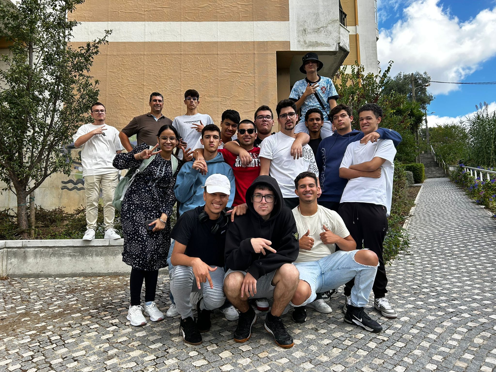

Os responsáveis pelo desenvolver este site foram alguns os alunos de Informática da escola Alves Redol do 12ºPC no ano de 2024/2025

Gabriel Caldas: Responsável pela estrutura do site e o seu desenvolvimento
João Dutra: Responsáveis pela criação do Album de fotos das atividades
realizadas no evento
Kaick Oliveira: Responsável por escrever e editar o texto digitado no site
O projeto foi solicitado pelo Professor Rui Vaz aos alunos para que fizessem um
site relacionado ao Dia Nacional do Desporto
O professor Rui Vaz forneceu-nos um exemplo de como deviamos desenvolver o site
o objetivo principal do site é Promover as varias atividades esportivas que estão
ao alcance da população